flowchart LR P1[Publisher] --> B[Broker] P2[Publisher] --> B B --> S1[Subscriber] B --> S2[Subscriber] B --> S3[Subscriber] B --> S4[Subscriber]
Digital Manufacturing
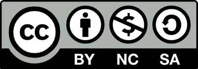
Università di Trento, Dipartimento di Ingegneria Industriale
Updated: 02/10/2026
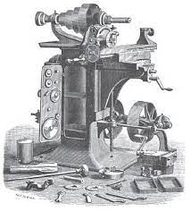
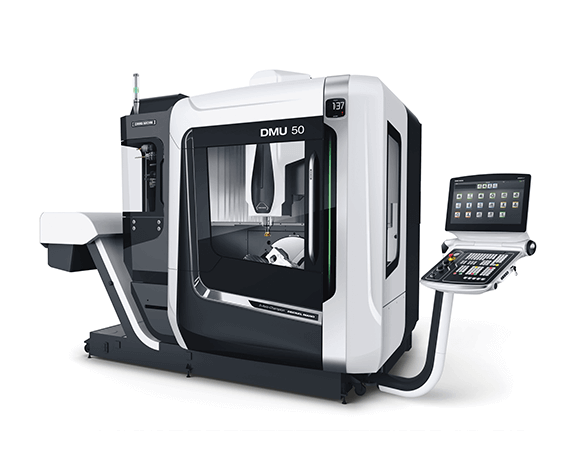
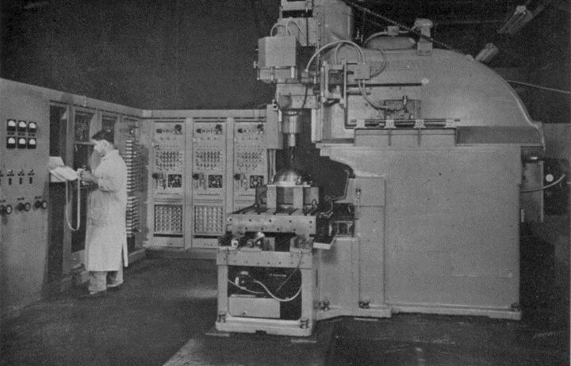
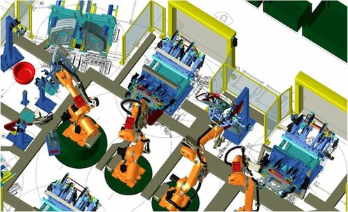
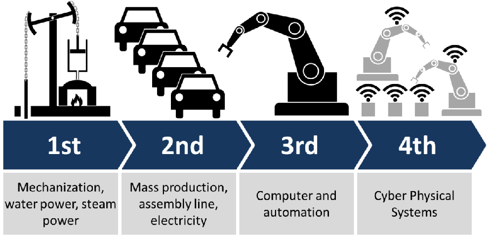
First Industrial Revolution
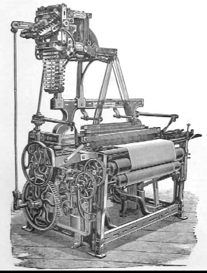
Second Industrial Revolution
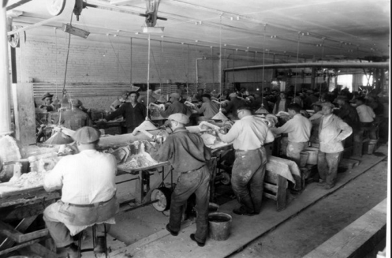
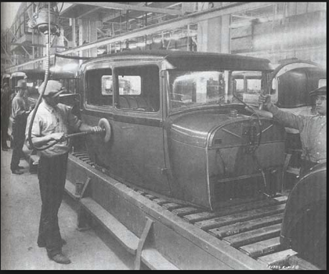
Third Industrial Revolution
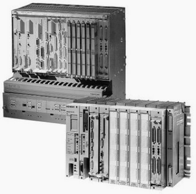
Objectives:
Design principles:
Design principles:
| Order | Human attribute | Example |
|---|---|---|
| 0 | None | Manual tools |
| 1 | Energy | Powered machines and tools |
| 2 | Dexterity | Single-cycle automatics (dexterity = self-feeding) |
| 3 | Diligence | Repeats cycle; open-loop control |
| 4 | Judgment | Closed loop; numerical control; self-measuring |
| 5 | Evaluation | Computer control; model of process required for automation |
| 6 | Learning | Limited self-programming; some artificial intelligence |
| 7 | Reasoning | Inductive reasoning (cause-effects) |
| 8 | Creativity | Performs (original) design unaided |
| 9 | Dominance | Machine is master (HAL 9000) |
Challenges:
Impacts:
Some core, enabling technologies are grounding I4.0 and DM:
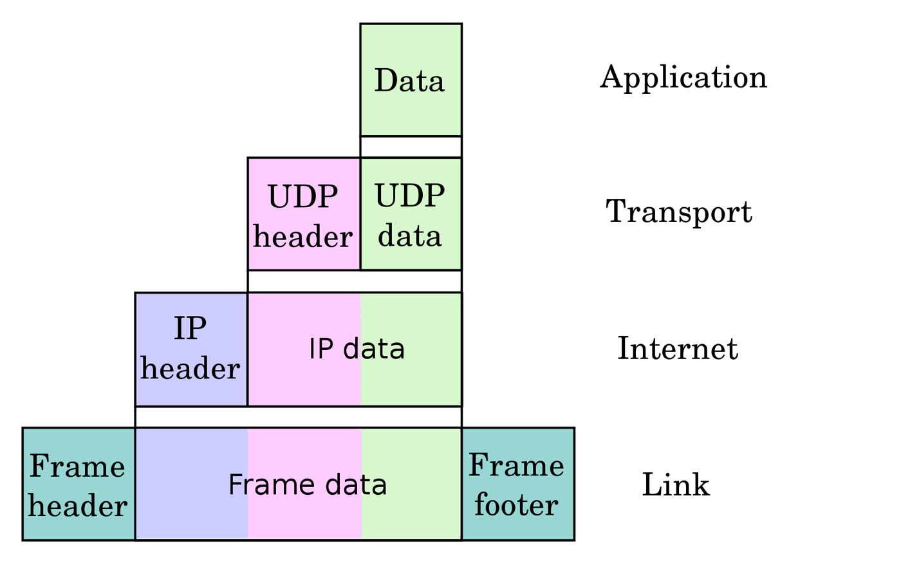
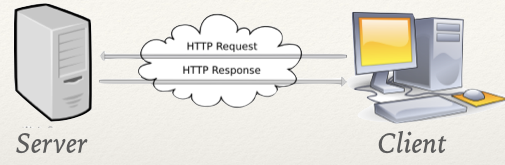
Request phrase: GET / HTTP/1.1 (14 × 2 bytes)
The HTTP frame takes 153 bytes total
The full request stack takes 437 bytes
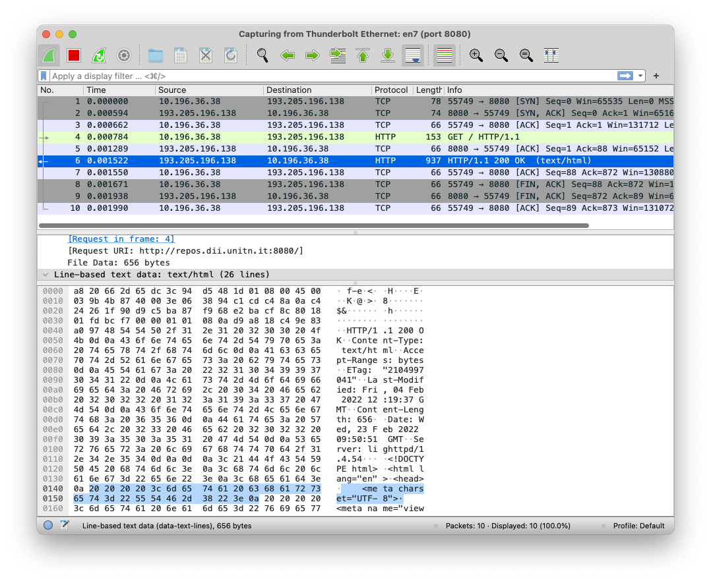
Response phrase: 77 bytes + HTML
The whole HTTP frame takes 937 bytes (including 819 bytes of HTML)
The full response stack takes 1201 bytes, 382 bytes for a blank page
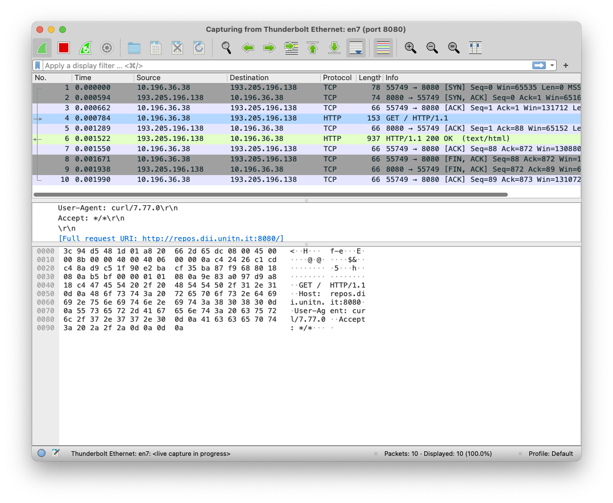
AND/OR
flowchart LR P1[Publisher] --> B[Broker] P2[Publisher] --> B B --> S1[Subscriber] B --> S2[Subscriber] B --> S3[Subscriber] B --> S4[Subscriber]
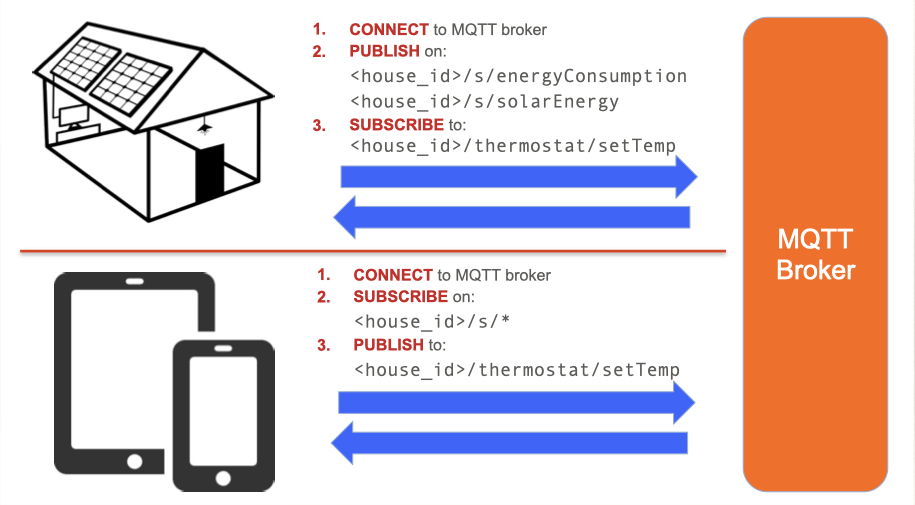
Machine Learning and Artificial Intelligence:
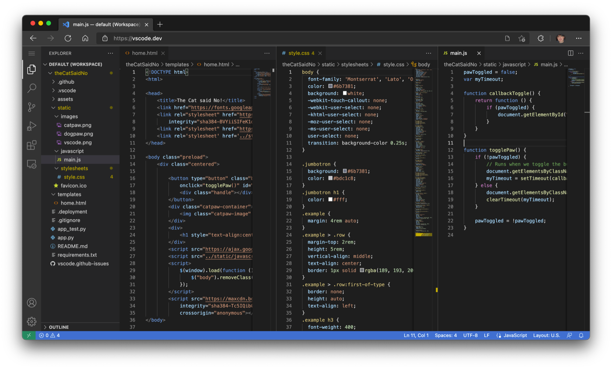
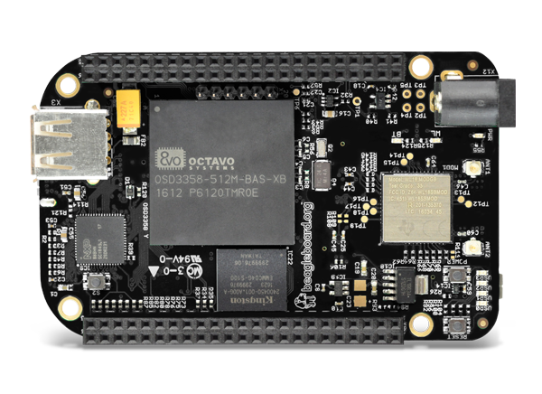
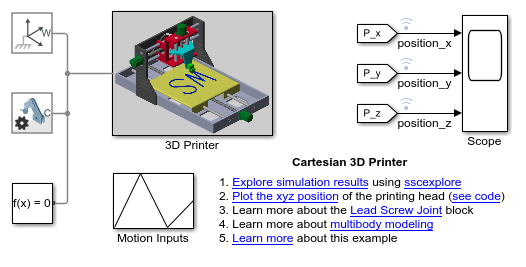
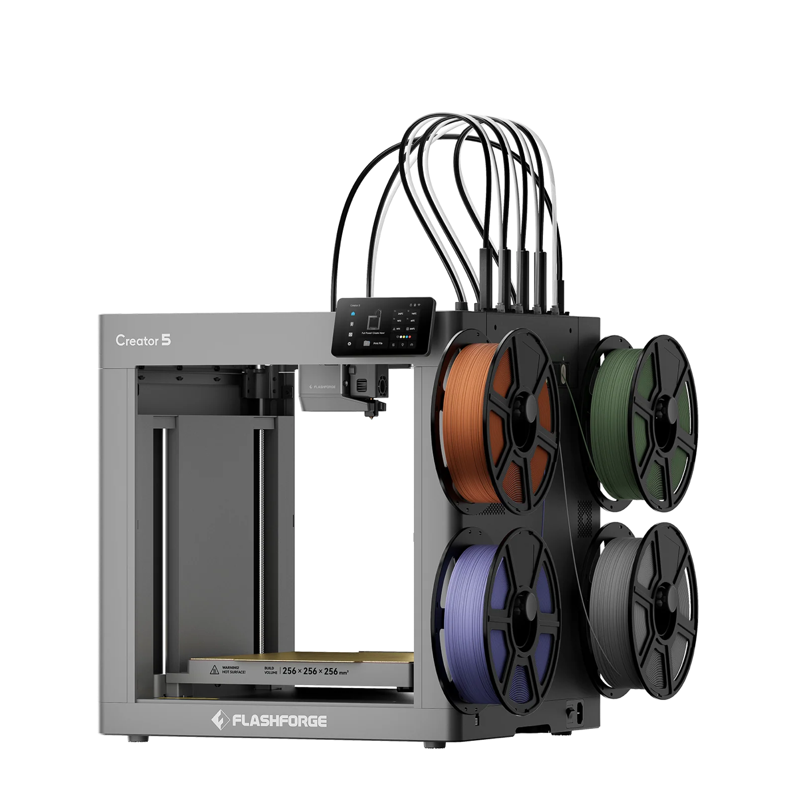
Development and testing ➡︎ Deployment ➡︎ (ZeroMQ) ➡︎ CPS simulation, and/or 3D printer
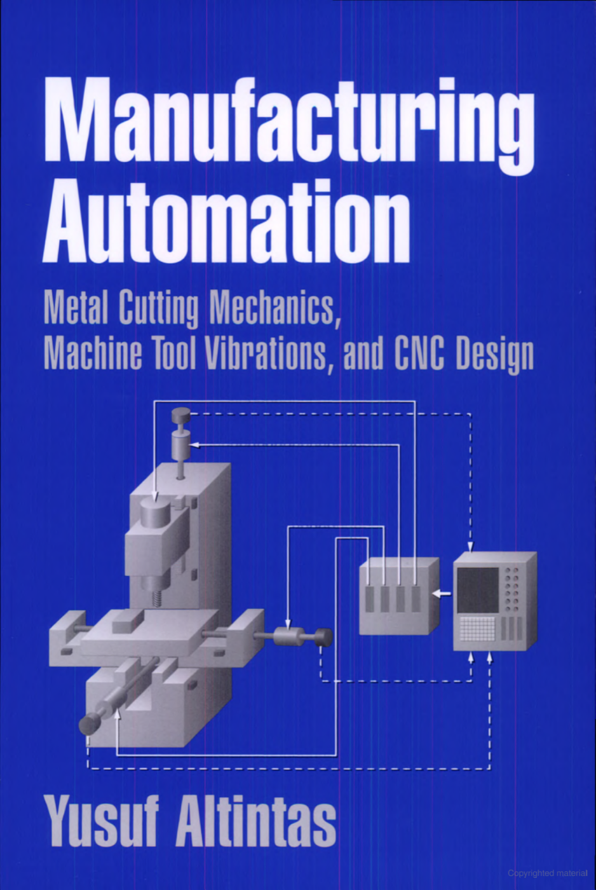
paolo.bosetti@unitn.it — https://pbosetti.github.io/DigMan/